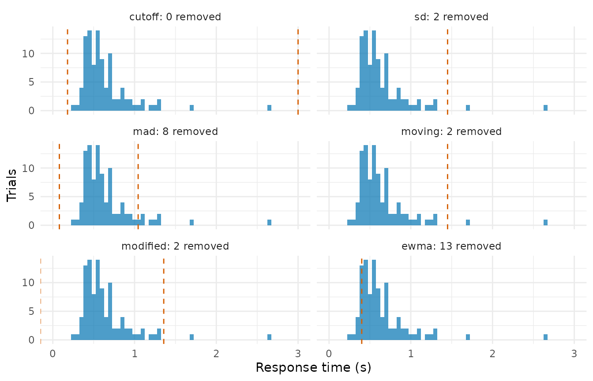

Screening rules: what each one removes
Source:vignettes/articles/screening-rules.Rmd
screening-rules.RmdThe get-started vignette applies one rule inside a dplyr pipeline and
moves on. This article stays with the rules. It takes each family in
?rules in turn and asks the same three questions of it:
what it removes, what it reports about the removal, and where it fails.
Everything runs on rt_example, plus two generated data sets
where a failure needs a task the example does not provide. The
contaminant mixture gets one paragraph here and its own article.
One return shape
A rule is a constructor that holds parameters and does nothing to
data. rt_screen() applies it and returns one row per trial
with the same four columns whichever rule it was given. A short vector
with a missing value, a slow trial, and a fast one shows all the values
the last column can take:
rt <- c(0.31, NA, 0.42, 3.20, 0.09)
rt_screen(rt, rule_cutoff(0.18, 3))
#> .keep .prob .rule .reason
#> 1 TRUE 1 cutoff(0.18, 3) <NA>
#> 2 FALSE NA cutoff(0.18, 3) missing
#> 3 TRUE 1 cutoff(0.18, 3) <NA>
#> 4 FALSE 0 cutoff(0.18, 3) too_slow
#> 5 FALSE 0 cutoff(0.18, 3) too_fast.keep is the decision, .prob the
probability that the trial came from the decision process,
.rule the label, and .reason why the rule
flagged it. A missing response time is excluded from every rule’s
computation and comes back with .keep = FALSE,
.prob = NA, and "missing" as its reason. A
kept trial never carries a reason.
What a rule computed on the way to those decisions sits in a second
table, one row per group of .by, and
screen_fits() returns it directly. Each family adds its own
columns to the four that are always there (.group,
n_trials, n_dropped,
prop_dropped), and the rest of this article reads the rules
through that table.
Absolute cutoffs
The oldest screen and still the most common: discard anything faster than a plausible minimum or slower than a plausible maximum. The pair most often inherited from the last paper is 180 ms and 3 s.
rt_example |>
reframe(screen_fits(rt, rule_cutoff(0.18, 3)), .by = c(id, condition))
#> id condition .group n_trials n_dropped prop_dropped lower upper
#> 1 p1 easy all 100 0 0 0.18 3
#> 2 p1 hard all 100 0 0 0.18 3
#> 3 p2 easy all 100 0 0 0.18 3
#> 4 p2 hard all 100 0 0 0.18 3
#> 5 p3 easy all 100 0 0 0.18 3
#> 6 p3 hard all 100 0 0 0.18 3
#> 7 p4 easy all 100 0 0 0.18 3
#> 8 p4 hard all 100 0 0 0.18 3The fits table reports the bounds and nothing else, because there is
nothing else: the rule estimates nothing. On rt_example it
removes no trial at all. The fastest response in the data set is 264 ms
and the slowest 2.67 s, so neither bound is ever reached.
Bounds are inclusive. A trial is flagged only when it falls strictly
outside them, so a response time of exactly 180 ms survives
rule_cutoff(0.18, 3). trimr uses strict
comparisons and would remove it, which is the one place the two packages
disagree on this rule.
rt_screen(c(0.1799, 0.1800, 0.1801), rule_cutoff(0.18, 3))
#> .keep .prob .rule .reason
#> 1 FALSE 0 cutoff(0.18, 3) too_fast
#> 2 TRUE 1 cutoff(0.18, 3) <NA>
#> 3 TRUE 1 cutoff(0.18, 3) <NA>The failure of an absolute cutoff is a failure of transfer. The pair
was written for a task with a particular speed, and it meets a different
one. rt_example is a fast task. To meet the same pair with
a slow, variable one, pick three observables well away from it: a mean
correct response time of 2.5 s, an accuracy of .80, and a coefficient of
variation of .50. ez_ddm() inverts those three into
diffusion parameters when it is given a very large trial count, and
r_contaminated() with rate = 0 then generates
clean data at exactly that regime:
slow_obs <- c(mean_rt = 2.5, accuracy = 0.80, cv = 0.50)
slow_par <- ez_ddm(
mean_rt = slow_obs[["mean_rt"]],
var_rt = (slow_obs[["cv"]] * slow_obs[["mean_rt"]])^2,
accuracy = slow_obs[["accuracy"]],
n_trials = 1e6
)
slow_par
#> drift bound ndt edge_corrected
#> 1 0.5132166 2.701188 0.9210247 FALSE
set.seed(2026092)
slow <- r_contaminated(
2000,
par = list(drift = slow_par$drift, bound = slow_par$bound, ndt = slow_par$ndt),
rate = 0
)
c(
mean_rt = mean(slow$rt),
cv = sd(slow$rt) / mean(slow$rt),
accuracy = mean(slow$response)
)
#> mean_rt cv accuracy
#> 2.5794687 0.5072074 0.8005000
slow_fit <- screen_fits(slow$rt, rule_cutoff(0.18, 3))
#> Warning: Some RT values > 10. Ensure RTs are in seconds, not milliseconds.
slow_fit
#> .group n_trials n_dropped prop_dropped lower upper
#> 1 all 2000 525 0.2625 0.18 3Not one of these trials is a contaminant, and the 180 ms / 3 s pair removes 26% of them. The warning above comes from the package’s units check, which fires whenever a response time exceeds 10 s because that usually means milliseconds were passed as seconds. Here it means what it says: a slow, variable task produces a handful of genuine responses that long, and they are the trials a fixed upper bound removes first.
Location and spread
rule_sd() flags trials further than a multiple of a
spread statistic from a centre, both recomputed within each group. With
the mean and the standard deviation it is the ±2.5 SD criterion, modal
practice in the field; with the median and the median absolute deviation
it is the criterion Leys et al. (2013) recommend instead, and
rule_mad() is the shorthand for that setting. One
constructor covers both because they are one algorithm with a different
location and spread pair, and the fits table shows the pair it used:
p3_hard <- rt_example |>
filter(id == "p3", condition == "hard")
bind_rows(
screen_fits(p3_hard$rt, rule_sd(2.5)),
screen_fits(p3_hard$rt, rule_mad(2.5))
)
#> .group n_trials n_dropped prop_dropped center scale lower
#> 1 all 100 2 0.02 0.6412949 0.3234479 -0.1673248
#> 2 all 100 8 0.08 0.5620000 0.1927380 0.0801550
#> upper
#> 1 1.449914
#> 2 1.043845Two things follow from the numbers. The median absolute deviation is smaller than the standard deviation on a right-skewed distribution, so the same multiplier draws a narrower band and removes more trials, here 8 against 2. And the lower bound of the SD criterion is negative. No trial can be too fast for it: the mean minus 2.5 standard deviations falls below zero on any response time distribution with the usual skew, which is why a symmetric criterion around the mean never reaches the leading edge where anticipations sit.
Miller (1991) is the standard warning about the SD criterion. The
proportion of a skewed distribution that falls outside a fixed
multiplier depends on the sample size, so the criterion changes what it
removes as trial counts vary. Measuring that takes clean data at several
group sizes. The generator gives 24,000 trials at
rt_example’s regime, and .by splits them into
groups of 10 to 200:
set.seed(2026092)
clean <- r_contaminated(
24000,
par = list(drift = 1.5, bound = 1.2, ndt = 0.30),
rate = 0
)
clean_drop <- function(rule, sizes = c(10, 20, 50, 100, 200)) {
bind_rows(lapply(sizes, function(k) {
group <- rep(seq_len(nrow(clean) / k), each = k)
fits <- screen_fits(clean$rt, rule, response = clean$response, .by = group)
data.frame(
rule = rule$label, n_trials = k,
prop_dropped = mean(fits$prop_dropped)
)
}))
}
drop_by_n <- bind_rows(
clean_drop(rule_sd(2.5)),
clean_drop(rule_recursive("modified")),
clean_drop(rule_ewma())
)
drop_by_n |>
tidyr::pivot_wider(names_from = rule, values_from = prop_dropped)
#> # A tibble: 5 × 4
#> n_trials `sd(2.5, mean, sd)` `recursive(modified)` `ewma(0.01, 1.5)`
#> <dbl> <dbl> <dbl> <dbl>
#> 1 10 0.0117 0.0285 0.292
#> 2 20 0.0292 0.0270 0.188
#> 3 50 0.0302 0.0243 0.0732
#> 4 100 0.0301 0.0235 0.0355
#> 5 200 0.0302 0.0228 0.0179Every trial in this table is genuine, so every entry is a false-alarm rate. The SD criterion removes 1.2% of clean trials in groups of 10, 2.9% in groups of 20, and 3% in groups of 200. Small groups underestimate the spread of a skewed distribution and the multiplier bites less, which is the dependence Miller described; by 200 trials the rate has settled. The modified recursive criterion in the second column was built to remove that dependence, and its rate moves from 2.9% at 10 trials to 2.3% at 200. The third column is a different rule with a different problem, and the next two sections take them in turn.
Recursive and moving criteria
Van Selst and Jolicoeur (1994) answered Miller’s sample-size problem
by making the multiplier itself depend on the number of trials.
rtprep ships their published table, interpolated between
the tabulated sizes as the table’s note instructs and as
trimr does. Three variants share the constructor:
p4_easy <- rt_example |>
filter(id == "p4", condition == "easy")
bind_rows(
screen_fits(p4_easy$rt, rule_recursive("moving")),
screen_fits(p4_easy$rt, rule_recursive("modified")),
screen_fits(p4_easy$rt, rule_recursive("hybrid"))
)
#> .group n_trials n_dropped prop_dropped criterion lower upper
#> 1 all 100 3 0.03 2.5000 -0.35905848 1.611060
#> 2 all 100 9 0.09 3.5018 -0.01842691 1.056683
#> 3 all 100 9 0.09 3.5018 -0.01842691 1.056683
#> iterations criterion_moving lower_moving upper_moving n_disagree
#> 1 1 NA NA NA NA
#> 2 9 NA NA NA NA
#> 3 9 2.5 -0.3590585 1.61106 6The moving criterion is one pass with the multiplier read off the
table for the group’s trial count, so iterations is always
1. The modified recursive procedure sets the largest remaining response
time aside while the mean and standard deviation are computed, removes
the most extreme trial at each end if it falls outside the resulting
bounds, and repeats until nothing is removed; the criterion
it reports is the one used on the last pass, and iterations
counts the passes. The hybrid reports both sets of bounds and
n_disagree, the number of trials on which the two variants
differ.
That disagreement is what the hybrid’s .prob encodes.
Per trial it is the mean of the two decisions, so it takes the values 0,
0.5, and 1:
hybrid <- rt_screen(p4_easy$rt, rule_recursive("hybrid"))
table(prob = hybrid$.prob, keep = hybrid$.keep)
#> keep
#> prob FALSE TRUE
#> 0 3 0
#> 0.5 6 0
#> 1 0 91Under the default policy a trial is kept when .prob
exceeds 0.5, so a trial the two variants disagree on is removed: the
hybrid keeps only what both keep. Van Selst and Jolicoeur’s published
hybrid statistic is something else, the mean of the two condition means,
and no single keep vector reproduces it because the two means have
different denominators. To recover the published number, summarise the
two variants separately and average the results; the code is in
?rule_recursive.
The accuracy control chart
Every rule so far reads response times alone.
rule_ewma() is the exponentially weighted moving average
cutoff that shipped with DMAT (Vandekerckhove & Tuerlinckx, 2007),
and the only published screen that reads accuracy. Trials are ordered
from fastest to slowest, an exponentially weighted average of accuracy
is accumulated from chance upwards, and the cutoff is the response time
at which that average first clears a control limit. Below it, accuracy
is indistinguishable from guessing. The rule needs
response:
screen_fits(p3_hard$rt, rule_ewma(), response = p3_hard$response)
#> .group n_trials n_dropped prop_dropped cutoff_rt n_flagged
#> 1 all 100 13 0.13 0.4 13
ewma_removed <- p3_hard |>
mutate(rt_screen(rt, rule_ewma(), response = response)) |>
filter(!.keep) |>
count(contaminant, process)
ewma_removed
#> contaminant process n
#> 1 FALSE clean 10
#> 2 TRUE leading_edge 3The chart lags, and the lag is a cost rather than an implementation detail. The average needs a run of correct trials before it clears the limit, so the cutoff lands past the point where accuracy actually rose, and the genuine trials just above the guesses go with them. In this cell the cutoff falls at 400 ms and removes 13 trials: 3 anticipations and 10 clean responses that happened to be fast. The sample-size table above shows the same lag from the other side: with 10 trials per group the chart has barely started when the group ends, and it removes 29% of clean trials; with 200 it removes 1.8%. Ratcliff and Kang (2021) note that the rule has not found much use. It is in the package as the published accuracy-based rule, and the cross-table above shows what its removals contained.
The mixture, in one paragraph
rule_mixture() fits a two-component mixture by
expectation maximisation: a parametric core for the decision process and
a uniform component for the contaminants, following Ratcliff and
Tuerlinckx (2002). It is the one rule whose .prob is a
genuine posterior rather than 0 or 1, which is why the keep policy
exists as a separate step. Which core to choose, what the bounds do,
what an unconverged fit does, and the three ways the rule fails are the
subject of the mixture article.
Probability before decision
.prob is the probability that a trial came from the
decision process, and .keep is a policy applied to it. For
every rule above the two coincide because the probability is 0 or 1. For
the mixture they come apart, and rt_screen() makes the
policy explicit. The default keeps a trial when .prob
exceeds threshold; raising the threshold removes more:
p1_easy <- rt_example |>
filter(id == "p1", condition == "easy")
mixture <- rule_mixture("lognormal")
at_50 <- rt_screen(p1_easy$rt, mixture)
at_90 <- rt_screen(p1_easy$rt, mixture, threshold = 0.9)
c(dropped_at_0.5 = sum(!at_50$.keep), dropped_at_0.9 = sum(!at_90$.keep))
#> dropped_at_0.5 dropped_at_0.9
#> 4 7
table(keep = at_90$.keep, reason = at_90$.reason, useNA = "ifany")
#> reason
#> keep contaminant <NA>
#> FALSE 4 3
#> TRUE 0 93The cross-table shows a distinction that matters when the exclusions
are reported. .reason records why the rule flagged
a trial, and the mixture flags a trial as a contaminant when the
posterior is against it. The trials the raised threshold removed on top
of those were not flagged by the rule; the policy dropped them, and
their reason stays NA.
The other policy keeps each trial with probability
.prob, drawing once per trial. It is stochastic by design,
and the seed belongs to the caller: there is no set.seed()
anywhere in the package.
set.seed(2026092)
drawn <- rt_screen(p1_easy$rt, mixture, policy = "probabilistic")
table(keep = drawn$.keep, reason = drawn$.reason, useNA = "ifany")
#> reason
#> keep contaminant <NA>
#> FALSE 4 3
#> TRUE 0 93The same split appears: trials the rule flagged, and trials a draw
against a fractional .prob happened to remove. A
probabilistic screen carries the mixture’s uncertainty into a resampling
analysis one draw at a time; the aggregation
article shows the other route, which is to hand .prob
to rt_summary() as a weight and remove nothing.
A rule that cannot be evaluated removes nothing
A spread of zero, a group of fewer than two trials, or a group below
the smallest size in van Selst and Jolicoeur’s table leaves the rule
without a criterion. In every such case the rule keeps everything and
says so in the fits table, rather than returning NA or
flagging by accident:
rt_screen(c(0.40, 0.40, 0.40), rule_sd(2.5))
#> .keep .prob .rule .reason
#> 1 TRUE 1 sd(2.5, mean, sd) <NA>
#> 2 TRUE 1 sd(2.5, mean, sd) <NA>
#> 3 TRUE 1 sd(2.5, mean, sd) <NA>
screen_fits(c(0.40, 0.50, 0.60), rule_recursive("moving"))
#> .group n_trials n_dropped prop_dropped criterion lower upper iterations
#> 1 all 3 0 0 NA NA NA 0bmm::flag_contaminant_rts() returns NA
where its fit fails; rtprep keeps the trial. A screen that
cannot be evaluated has no grounds to remove data, and a summary
computed downstream should see every trial rather than a hole.
Every bound on one cell
The fits tables make the rules comparable in one picture. Each panel is the same participant’s hard condition; the dashed lines are the bounds that rule reported, and the panel label carries the number of trials it removed.
rules <- list(
cutoff = rule_cutoff(0.18, 3),
sd = rule_sd(2.5),
mad = rule_mad(2.5),
moving = rule_recursive("moving"),
modified = rule_recursive("modified"),
ewma = rule_ewma()
)
bounds <- bind_rows(lapply(names(rules), function(name) {
fit <- screen_fits(p3_hard$rt, rules[[name]], response = p3_hard$response)
data.frame(
rule = name,
lower = if (is.null(fit$lower)) fit$cutoff_rt else fit$lower,
upper = if (is.null(fit$upper)) NA_real_ else fit$upper,
n_dropped = fit$n_dropped
)
}))
bounds
#> rule lower upper n_dropped
#> 1 cutoff 0.1800000 3.000000 0
#> 2 sd -0.1673248 1.449914 2
#> 3 mad 0.0801550 1.043845 8
#> 4 moving -0.1673248 1.449914 2
#> 5 modified -0.1524191 1.356961 2
#> 6 ewma 0.4000000 NA 13
bounds <- bounds |>
mutate(
panel = paste0(rule, ": ", n_dropped, " removed"),
panel = factor(panel, levels = panel)
)
tidyr::expand_grid(p3_hard, bounds) |>
ggplot(aes(rt)) +
geom_histogram(binwidth = 0.05, fill = okabe_ito[1], alpha = 0.7) +
geom_vline(
data = bounds,
aes(xintercept = lower), colour = okabe_ito[4], linetype = 2
) +
geom_vline(
data = filter(bounds, !is.na(upper)),
aes(xintercept = upper), colour = okabe_ito[4], linetype = 2
) +
coord_cartesian(xlim = c(0, 3)) +
facet_wrap(~panel, ncol = 2) +
labs(x = "Response time (s)", y = "Trials") +
theme_minimal()
The absolute cutoff’s bounds sit outside everything the task produced. The SD criterion and both recursive criteria show only an upper bound, because their lower bounds are negative and off the axis. The MAD criterion is the one location-and-spread rule whose lower bound is positive, and it still falls short of the fastest trial in the cell; in this cell the chart is the only rule that removed anything from below. Which of those removals were contaminants is a question the fits table cannot answer; the vignette scores it against the generator’s truth, and the ground-truth article does so for a task matched to your own.
Where next
?rules documents every constructor with the reference it
implements and the columns it adds to the fits table. Two further,
experimental rules are unexported and described in
?rules_experimental. The mixture has its own article, the aggregation article covers what happens
to the surviving trials, and the
comparison article applies a whole roster at once with
screen_compare() and reports where the rules disagree.